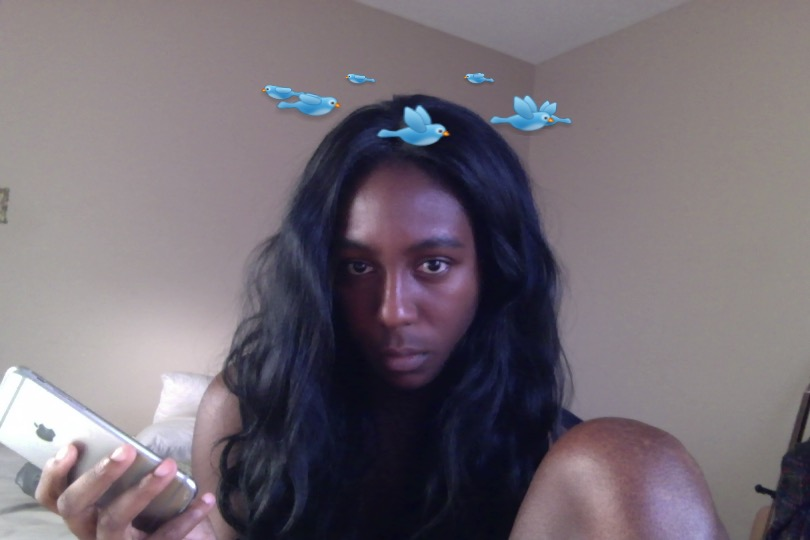

en.n.  is a communication access artist who uses text, sound, photo, abstract video, and tactile media to tell interactive stories.
/scribbles (since 2022), art school (Are.na, since 2022), singles ("short stories")
link garden 2